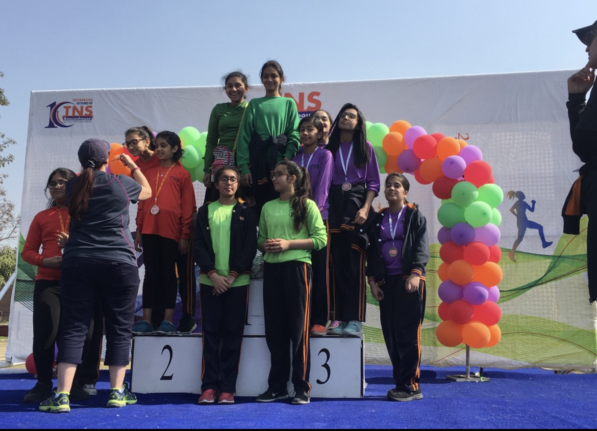
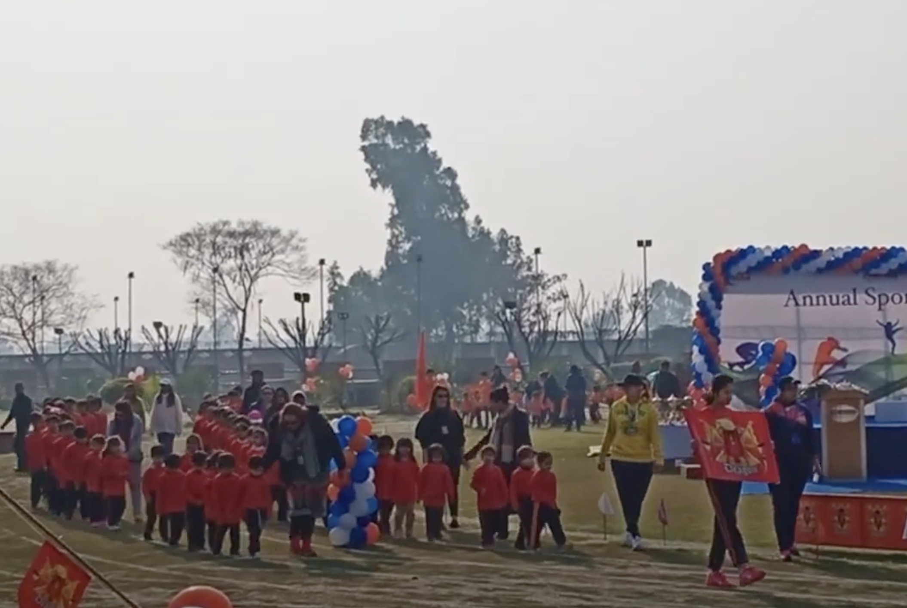
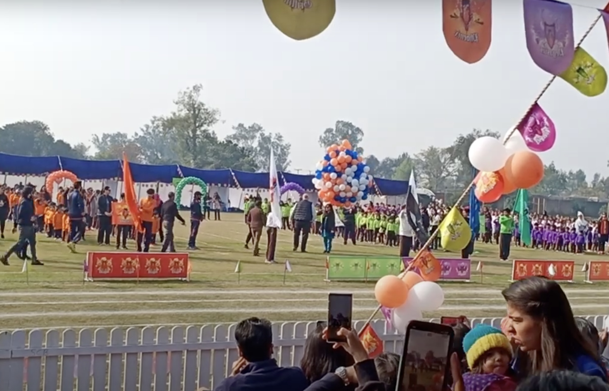
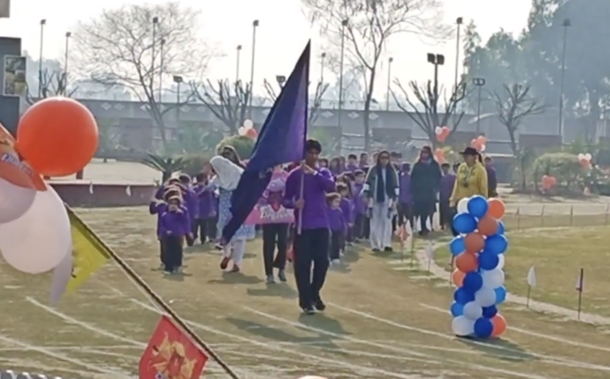
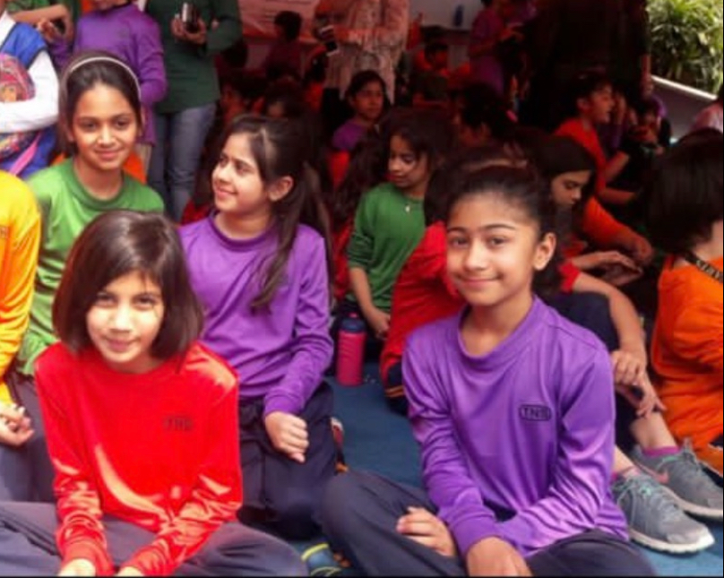

Sports day at TNS was always a highly anticipated event, filled with excitement. Over the years, we as students became more and more involved in my high schools sports day events whether that be simply participating or in terms of the planning as well.
We would have 3 sports days depending on which grade we were in. My earliest memory of sports day in school is during MYP or middle school. The event would be held at a sports complex, covered in decorations and with plenty of seating for parents to watch. On the day of the event, students from grades 6 to 10 gathered on the field, wearing their respective team colors, ready to compete in a variety of events such as tug of war, long jump, relays, sprints, hurdles race, sack race and many more.
Before the races would start, each house would form a line led by the house captains and vice captains and march around the field, stopping in-front of the parents and judges. It was led by the head girl and head boy who would hold the Pakistan flag and the schools flag, followed by the 4 house captains and 4 house vice captains holding the flags of their respective houses; Dragon, Phoenix, Pegasus and Griffin.
After the march, there would be a ceremony in which our principal would release a sign held with orange, blue and white balloons representing the schools colors, the sign would read the words “TNS Beaconhouse Annual Sports day” on it. After, we would sing the national anthem and our schools song. There would then be a taekwondo show put on by students from each house and then the cheerleaders would perform.
While waiting for our events, my friends and I would sit in the tent eating snacks, playing music, dancing, playing games and talking. All of us were wearing our respective house shirts, I was wearing green for the Griffin house. Right before our event, our names would be announced and we would run to the starting line. Over the years, I participated in many different events, such as the huddle race, the relay race and more. I was also part of the cheerleading team for a while and we would perform right before the races began.
After sports day was over, we would usually come again the next day to watch our seniors participate in their races and picture ourselves all grown up participating in the same events as them. Sports day brought the whole school together, creating memories of school spirit and camaraderie that I believe we have all cherished long after the final race was run and will continue to cherish.